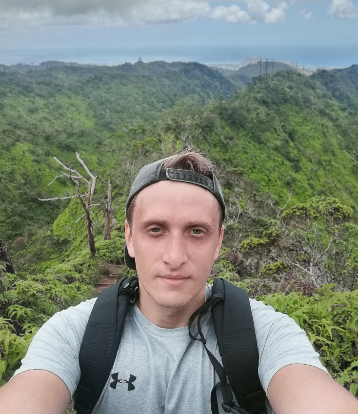

Nikita Lazarev

Hey-hey,
These days, I’m generally interested in cloud/edge computing, low latency networking/distributed systems, and computer architecture. My research focuses on exploring various hardware innovations to reduce (and even eliminate) the datacenter tax and make cloud computing more efficient, fast, end environmental friendly.
I stepped onto my PhD journey with a diverse engineering background after earning an undergraduate degree in Electrical Engineering from BMSTU, an MS degree in Computer Science from EPFL, and working as a software developer at a Samsung R&D Institute for about two years.
I was an intern and visiting student researcher at Microsoft Research in 2017 (India), 2018 (Cambridge, UK), and 2021 (Redmond, USA) working with great people and on exciting technologies such as 5G, low-latency database systems, and real-time machine learning.
In my free time, I enjoy all sorts of intense outdoor activity like plying tennis, hiking, skiing, surfing. I also like traveling and exploring the world. So far, I have lived in 5 different countries and visited 28 other countries as a tourist. Sometimes I play drums.
As a systems researcher (and engineer), I enjoy building things!
And this is very true! Nothing (even accepted papers) motivates me as much as a really running system.
Building systems as a hardware-focused researcher is challenging in academia. It takes time and requires additional efforts to attract industrial collaborators to support the projects. But this is another part of our work that I really enjoy! Our research is supported by Intel, Xilinx, and Microsoft, and I’m very grateful for all their help.
Let’s Keep in touch!
- CV
- Email: nikita.u.lazarev@gmail.com, niklz@mit.edu
- Telegram: @tnikita09